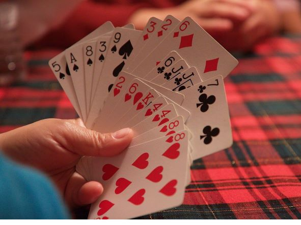

Anastasia's Bleeding Hand
An almost random collection of playing card tips
All Personally Copy and Pasted with Added Fun Original Titles
Ran out of time to add all the random factoids I found

The Tips
- Shuffle Shuffles
- Keeping your Deck Spic and Span
- Too Many Card Games
Links to the random factoids if you'd like to peruse them
Lots of Good Sweet, Sweet Random Factoids
(a short video) The (Potential) Terribly Symbolic Nature of Cards with a Big Dollop of American Nationalism
Card Phrases that have Infiltrated our Lives